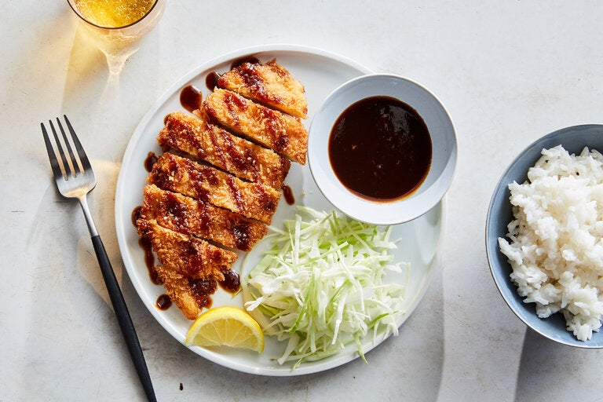

Air Fryer Chicken Katsu with Homemade Katsu Sauce

Air fryer chicken katsu that is crispy on the outside, tender and juicy on the inside. The sauce is a little bit sweet, a little bit tangy, and complements the chicken perfectly. Serve over rice if desired.
Ingredients
Katsu Sauce:
- ½ cup ketchup
- 2 tablespoons soy sauce
- 1 tablespoon brown sugar
- 1 tablespoon sherry
- 2 teaspoons Worcestershire sauce
- 1 teaspoon minced garlic
Chicken:
- 1 pound boneless skinless chicken breast, sliced in half horizontally
- 1 pinch salt and ground black pepper to taste
- 2 large eggs, beaten
- 1 ½ cups panko bread crumbs
- cooking spray
Directions
Step 1
- Prepare sauce: Whisk ketchup, soy sauce, brown sugar, sherry, Worcestershire sauce, and garlic together in a bowl until sugar has dissolved. Set katsu sauce aside.
Step 2
- Preheat an air fryer to 350 degrees F (175 degrees C).
Step 3
- Meanwhile, lay chicken pieces on a clean work surface. Season with salt and pepper.
Step 4
- Place beaten eggs in a flat dish or shallow bowl. Pour bread crumbs into a second flat dish. Dredge chicken pieces in egg and then in bread crumbs. Repeat by dredging chicken in egg and then bread crumbs again, pressing down so the bread crumbs stick to the chicken.
Step 5
- Place chicken pieces in the basket of the preheated air fryer. Spray the tops with nonstick cooking spray.
Step 6
Air fry for 10 minutes. Flip chicken pieces over using a spatula and spray the tops with nonstick cooking spray. Cook for 8 minutes more. Transfer chicken to a cutting board and slice. Serve with katsu sauce.